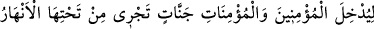
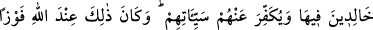
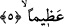

ordularındandır. Sana bizzat seni musallat ederse kendi kendine helâk olursun. Eğer
sana âzâlarını musallat ederse, bazı uzuvlarını bazı uzuvların helâk eder. Eğer nefsini
kalbine musallat ederse, nefsin seni şehvetlere ve şeytana uymaya sevkeder. Şâyet
kalbini, nefsine ve azalarına musallat eder hâkim kılarsa edeple onu kötüler, ibadet
yapmaya zorlar, samimiyet ve kullukla onu zinetlendirir.
“Allah bilendir, her şeyi hikmetle yapandır.” Allah her şeyi ezelî ve ebedî bilgisiyle
ihâta eder. Planlarında ve işleri düzene sokmasında son derece hikmet sahibidir.
“Kâne” ifâdesi hem geçmiş zamanı, hem gelecek zamanı (istimrârı) içine alır. Bu ifâde,
geçmişte bu sıfatın var olduğunu bildirmek için değil; hem geçmişte, hem de gelecekte
var olduğunu ve var olmaya devam edeceğini anlatmak için kullanılmıştır.
Büyüklerden birisi diyor ki: “Göklerin ve yerin orduları Allah’ındır” ifâdesiyle
kasdedilen, kudsî nurlar ve ruhânî yardımlardır. “Yerin orduları” ile kasdedilen ise,
nefsânî, özellikler ve tabiat kuvvetleridir. Bu ordulardan birisi diğerine galip gelir. Eğer
semâvî ordular, yerin ordularına galip gelirse, sükûnet ve mükemmel bir yakîn meydana
gelir. Şâyet yerin orduları galip gelirse, endişe ve şüphe ortaya çıkar. Onların gizli
hallerini ve kabiliyetlerinin nelere ihtiyaç duyduğunu, birinci gurubun sâfiyetine karşılık
ikinci gurubun nefislerinin karmaşıklığını, Allah çok iyi bilir ve yaptığı şeylerde hikmet
sâhibidir.
et-Te’vilâtü’n-Necmiyye adlı eserde denir ki: Göklerin ve yerin orduları Allah’ındır;
yâni Göklerde ve yerde olan her şey Allah’ın tek olduğuna işâret eder. Bu işâretler
bilindiği takdirde insanı Allah’a ibadete sevkeder ki bu da bir zaferdir. Bu denli bir
zafere kimin lâyık olduğunu ancak Allah hakkıyla bilir. O bu zaferin kime nasib
olacağına ezelde karar vermesiyle de son derece hikmet sahibidir.
5. (Bütün bu lütuflar) mümin erkeklerle mümin kadınları, içinde ebedî
kalacakları, zemininden ırmaklar akan cennetlere koyması, onların günahlarını
örtmesi içindir. İşte bu, Allah katında büyük bir kurtuluştur.
“Mü’min erkekleri ve mü’min kadınları, altlarından ırmaklar akan cennetlere
ebedî olarak orada kalmak üzere, sokmak için” ifâdesi, göklerin ve yerin ordularının
Allah’ın olduğunu ifâde eden cümleyle bağlantılıdır. Mü’minleri kâfirler üzerine
musallat etmek şeklinde kendini gösteren Cenab-ı Hakk’ın tasarruf ve düzenlemeleri, bu
hâdiselerde mü’minlerin Allah’ın nimetini görüp, şükretmeleri ve dolayısıyla Allah’ın
onları cennete sokması içindir.